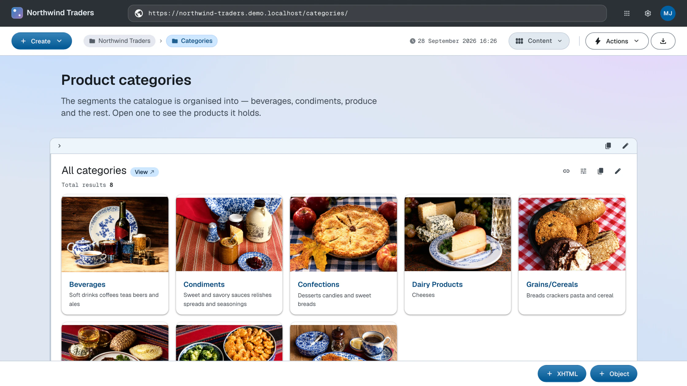

Data
Import CSV data using SPARQL mappings
Northwind's data ships as plain CSV files. The first rows of categories.csv:
categoryID,categoryName,description,pictureHash 1,Beverages,Soft drinks coffees teas beers and ales,ec56b79671b30ecb98316d9b766fba198286b3b6 2,Condiments,Sweet and savory sauces relishes spreads and seasonings,7e9f535a3bf693ec856702856fffd3be5a3df4f1
Source: categories/categories.csv
LinkedDataHub imports CSV by running a SPARQL CONSTRUCT mapping over each
row: the row's cells are bound as properties of a row resource, and the query builds
the RDF you want from them. Each column becomes a predicate named after its header,
resolved against the
imported file's URI — the categoryID column binds as <#categoryID>. The mapping for categories, categories.rq:
PREFIX foaf: <http://xmlns.com/foaf/0.1/>
PREFIX dct: <http://purl.org/dc/terms/>
PREFIX schema: <https://schema.org/>
CONSTRUCT
{
GRAPH ?graph
{
?graph dct:title ?categoryName ;
foaf:primaryTopic ?category .
?category a schema:ProductGroup ;
dct:title ?categoryName ;
dct:description ?description ;
schema:name ?categoryName ;
schema:identifier ?categoryID ;
schema:description ?description ;
foaf:depiction ?picture .
}
}
WHERE
{
?category_row <#categoryID> ?categoryID ;
<#description> ?description ;
<#categoryName> ?categoryName ;
<#pictureHash> ?pictureHash .
BIND(uri(concat(str($base), "categories/")) AS ?container)
BIND(uri(concat(str(?container), encode_for_uri(?categoryID), "/")) AS ?graph)
BIND(uri(concat(str(?graph), "#this")) AS ?category)
BIND(uri(concat(str($base), "uploads/", encode_for_uri(?pictureHash))) AS ?picture)
}
Source: categories/categories.rq · Live: /categories/1/
The four BINDs carry the whole document model of the import:
| Variable | Binds to |
|---|---|
?container |
The target container from the Structure stage, resolved against $base, which LinkedDataHub binds to the dataspace's base URI when the mapping runs |
?graph |
One document (named graph) per row, minted inside the container from the row's identifier |
?category |
The document's topic: the document is about the category, so the category is a #this fragment of it |
?picture |
The category's image, addressed by the content hash the CSV carries (the Media stage explains why that works) |
Upload the CSV file, save the mapping query as a CONSTRUCT document, then create a CSV Import that pairs the two with the target container — three passes through the Create dropdown, walked through step by step in the Import CSV data guide.
Each import pairs a mapping query with a CSV file and a target container. The demo lists them in a manifest, imports.csv:
query_filename,csv_filename,target,title categories/categories.rq,categories/categories.csv,categories/,Categories customers/customers.rq,customers/customers.csv,customers/,Customers employees/employees.rq,employees/employees.csv,employees/,Employees orders/orders.rq,orders/orders.csv,orders/,Orders ...
Source: imports.csv
A small loop over the CLI replays the manifest: each line saves its mapping query with ldh add construct, then pairs it with the CSV file and target container in an import created with ldh add csv-import.
Upload the CSV first with ldh add file, which prints the upload URI the import refers to (the Media stage covers uploads). A single import then looks like this:
ldh add construct \
--uri "#categories-query" \
--title "Categories" \
--query-file categories/categories.rq \
"${LDH_BASE}categories/"
ldh add csv-import \
--title "Categories" \
--query "${LDH_BASE}categories/#categories-query" \
--file "$csv_upload_uri" \
"${LDH_BASE}categories/"
(The readable #categories-query fragment is this tutorial's choice; the demo's install.sh mints a UUID fragment per query instead.)
Imports run asynchronously. Each import is itself a document that records its status — reload it to see progress, the amount of imported data on success, or the constraint violations on failure.
What you now see
The Categories container lists eight category documents. Open one: the category renders with its name, description and identifier, typed as a product group — with the labels coming from the Model stage. Repeat the pattern for the remaining entities and the Knowledge Graph fills in: orders link to products, products to suppliers and categories.

How this works
- CSV imports — the import pipeline: file, mapping query, import resource, validation
- Mapping queries — the rules mapping queries follow, with an annotated skeleton
Next: Media